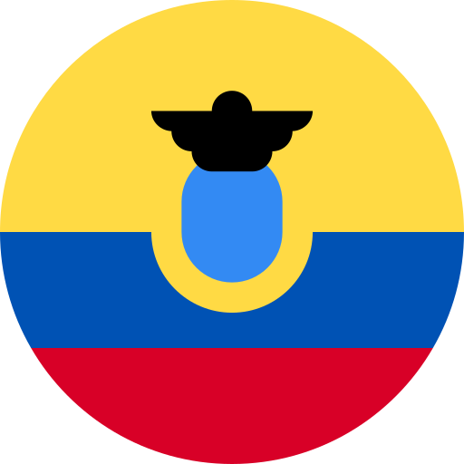
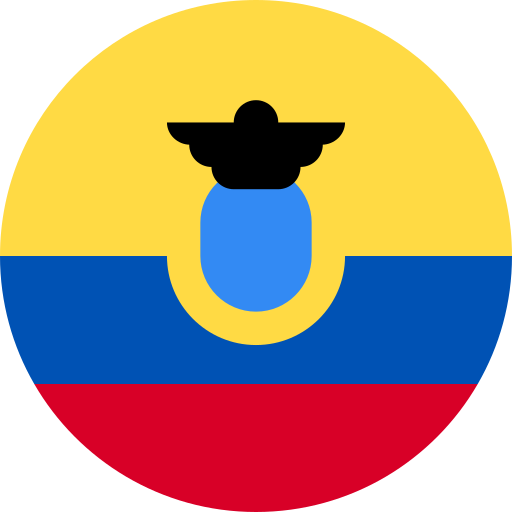

github.com/MeczycielBiedronek
http://filipwojtaszek.pl/
+48 796 787 979
fistah@gmail.com
Krótko o motywacjach
Swoje pierwsze strony internetowe tworzyłem juz w szkole podsawowej, a podczas studiów juz pierwszy raz zarobkowo. Po studiach sciezka mojej kariery potoczyla się w stronę grafiki komputerowej, a strony internetowe tworzyłem dorywczo. Po 10 latach w tej branzy zdecydowalem zając się juz wyłącznie front-end'em. Wiele się zmieniło od tego czasu, dlatego ostatnie parę miesięcy spędziłem na kursach i odświezaniu swojej wiedzy o CSS3 i standart ES6. Obecnie uczę się ReactJSNarzędzia których uzywam: VSC, GIT, Figma, CL
Doświadczneie zawodowe

2007-2009 Freelancer
Kielce Świętokrzyskie
web developer / grafik
Praca na zlecenie
2009-2019 szparowanie.pl
Kielce Świętokrzyskie
grafik komputerowy / CEO
Własna działalność polegająca na obróbce zdjęć do celów sprzeday w internecie
Edukacja
2007-2009 Studia I stopnia
Kielce Świętokrzyskie
filologia angielska
specjalizacja - Angielski w biznesie

2009 London Chamber of Commerce and Industry Certificate
Londyn Wielka Brytania
certyfikat językowy
Inne


2013-2014 Wolontariat
Praca pro bono
w Portugalii i Hiszpanii

 





2016-2017 Wolontariat
Praca pro bono
w Kanadzie, Islandii, Teksasie, Ekwadorze, Hawajach, Australii i Japonii